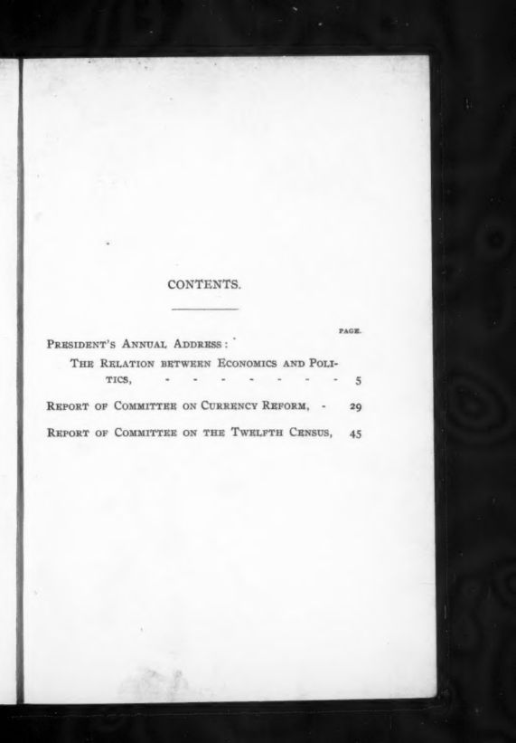

A reforma monetária de 1898 segundo cinco economistas
Leitura: 7 min
O comitê da associação pede segurança legal para o padrão ouro, notas bancárias elásticas emitidas contra ativos comerciais, bancos com agências no interior e um acordo dos reformadores em torno de qualquer projeto viável.


Um banco nacional americano de 1898 que quisesse pôr mais notas em circulação precisava antes comprar títulos do governo e depositá-los como garantia. Quando surgia a necessidade de mais moeda, seus recursos já estavam empregados em papéis comerciais e empréstimos. O resultado, diz o comitê da American Economic Association, era que a maioria dos bancos emitia só a quantidade de notas que ficava em circulação o tempo todo; as flutuações da necessidade quase não eram atendidas.
O relatório foi apresentado na décima primeira reunião anual, em 29 de dezembro de 1898, e publicado no nº 1 do quarto volume dos Economic Studies. Assinam F. M. Taylor, de Michigan, F. W. Taussig, de Harvard, J. W. Jenks, de Cornell, Sidney Sherwood, da Johns Hopkins, e David Kinley, de Illinois. O texto reúne declarações que, para os autores, teriam o assentimento dos economistas em geral; a associação registra que não assume responsabilidade pelas opiniões.
A reforma ainda era necessária?
Apesar das melhoras de dois ou três anos, sim. O comitê aponta quatro falhas: o padrão de valor não era tão seguro quanto deveria; as notas careciam de elasticidade; faltavam bancos nas regiões novas ou mais atrasadas; e o sistema não tinha unidade nem organização. Ao citar a insegurança do padrão, os autores esclarecem que não afirmam ser o padrão vigente o único possível ou o mais desejável; apenas que, enquanto existir, deve ter a maior segurança possível.
O relatório admite que o ouro estava mais firme. Contribuíam o Tesouro cheio, a grande reserva de ouro, o saldo comercial excepcional, a revogação do dispositivo da lei de 1890 que mandava emitir notas do Tesouro na compra de prata e a cláusula da lei de receitas de guerra que autorizava o secretário do Tesouro a tomar empréstimos para cobrir déficits temporários. Um governo decidido a manter o padrão podia fazê-lo. Mas, por incoerências das mesmas leis, um governo disposto a derrubá-lo também podia, ainda que a política declarada da nação fosse mantê-lo.
Por que as notas não eram elásticas?
O primeiro motivo era a garantia em títulos federais, ativo que os bancos não têm nem devem ter em grande quantidade. O segundo, a falta de lucro: para ser elástica, dizem os autores, a circulação precisa ser rentável. O lucro faz cada banqueiro querer expandir as próprias notas e, por isso, devolver depressa as dos vizinhos ao emissor; quando há mais necessidade de moeda, as notas saem rápido e voltam devagar; quando há menos, acumulam-se nos bancos e voltam ao emissor. A maioria dos bancos depositava o mínimo legal de títulos e nem sempre emitia o que podia.
O terceiro motivo estava na própria lei, que limitava o volume de notas retiradas por mês e proibia a reemissão por seis meses depois do resgate.
“assim, na prática, premiando a inelasticidade” (thus actually putting a premium on inelasticity)
Para os pânicos, quando cresce de repente a procura por moeda, nada havia sido feito. Uma crise tão grave quanto a de 1893, prevê o comitê, traria fome monetária igualmente severa e o recurso a expedientes improvisados, de legalidade e eficácia duvidosas.
Qual padrão e quem deveria mantê-lo?
A política sensata, diz o relatório, era reconhecer que o padrão efetivo era e por algum tempo seria o ouro, e legislar para estabilizá-lo até que a nação decidisse outro. Isso não obrigava ninguém a julgar o ouro o melhor padrão em abstrato. Muitos economistas preferiam o bimetalismo internacional, mas ele estava fora de questão; a escolha real era entre ouro, prata ou papel.
“o padrão ouro é, para os Estados Unidos, o melhor disponível” (the gold standard is, for the United States, the best available)
O comitê propõe definir explicitamente o padrão em ouro e entregar a conversibilidade das demais moedas a uma ou mais instituições de natureza bancária. Se isso fosse impraticável e a tarefa continuasse com o Tesouro, o departamento deveria ser organizado para ela, separando as funções monetárias das fiscais. Sugere ainda abrir espaço para a prata retirando as notas de menos de dez dólares e autorizar o secretário a reter as notas dos Estados Unidos já resgatadas.
Como dar elasticidade às notas?
A emissão bancária deveria ficar sob controle federal e ser mais elástica, sem perder segurança. A solução de fato eficaz, dizem os autores, exigiria emitir parte das notas contra ativos bancários comuns, os únicos disponíveis quando a expansão é necessária e que variam, como a necessidade de moeda, com o volume dos negócios. Um fundo de garantia daria segurança; se a objeção fosse a custódia dos papéis pelo banco emissor, as notas poderiam ser emitidas pelas câmaras de compensação, que guardariam os papéis comerciais em fideicomisso, como faziam com os certificados de empréstimo.
Se essa lei se mostrasse impossível, o sistema de garantia em títulos deveria ser emendado: revogar os limites da lei de 1882 ao resgate e à reemissão, elevar a proporção de notas por título depositado, reduzir o imposto sobre a circulação ou cobrá-lo sobre capital e reservas, proibir os bancos de repassar notas de outros bancos senão ao emissor ou à agência de resgate, e obrigar o Controlador da Moeda a manter notas em branco à disposição. Para os pânicos, o comitê sugere o expediente já testado na Alemanha: um imposto tão alto sobre a emissão extra que só valesse a pena usá-la na emergência, administrado pelas câmaras de compensação.
E os bancos do interior?
O meio mais eficaz e seguro, segundo o comitê, seria um sistema de agências que complementasse, sem substituir, os bancos independentes: levaria serviços a comunidades pequenas demais para sustentar um banco emissor e transferiria capital das regiões com sobra para as carentes. Se o receio de concentração de capital prevalecesse, havia alternativas: emitir contra ativos gerais, isentar do imposto federal de 10% sobre a circulação os bancos estaduais que aceitassem supervisão federal, ou baixar o capital mínimo de um banco nacional para 20 ou 25 mil dólares.
Por isso a conclusão é um apelo. A divergência entre os reformadores, diz o relatório, era menor do que parecia; os planos tinham surpreendente semelhança. Os amigos da reforma deveriam abrir mão de preferências de detalhe e exigir do Congresso a lei possível.
Na minha leitura
Na minha leitura, o relatório vale pela clareza do diagnóstico institucional. Os autores percebem que a elasticidade da moeda depende de incentivos, do lucro da emissão e da facilidade do resgate, e não só da quantidade autorizada; e que a garantia em títulos públicos amarra a oferta de moeda a um ativo que nada tem a ver com a necessidade dos negócios.
A proposta de separar no Tesouro as funções monetárias das fiscais, ou de entregar a conversibilidade a uma instituição bancária, é o embrião da ideia de que a gestão da moeda deve ficar longe das necessidades de caixa do governo. E o imposto proibitivo sobre a emissão de emergência é um desenho engenhoso para ter um emprestador de última instância que só funcione quando necessário.
Glossário
- Banco nacional
- banco com carta federal, autorizado a emitir notas contra títulos do governo depositados no Tesouro.
- Notas dos Estados Unidos (United States notes)
- papel-moeda de curso legal emitido pelo governo federal, os greenbacks.
- Fundo de garantia (safety fund)
- reserva comum dos bancos emissores para pagar as notas de um banco que quebre.
- Certificado de empréstimo (loan certificate)
- título emitido pelas câmaras de compensação nas crises, contra garantias dos bancos, para liquidar saldos entre eles.
- Banco com agências (branch banking)
- banco que opera por várias filiais, em vez de um único estabelecimento independente.
- Controlador da Moeda (Comptroller)
- autoridade federal responsável pelos bancos nacionais e pela emissão de suas notas.
Fontes
- Report of the Committee on Currency Reform — F. M. Taylor (University of Michigan), F. W. Taussig (Harvard University), J. W. Jenks (Cornell University), Sidney Sherwood (Johns Hopkins University) e David Kinley (University of Illinois) (pp. 29–44). Internet Archive (número completo, PDF)
- Edição completa, com os demais artigos: ES 20 do Arquivo.
Documento em domínio público (EUA, publicado antes de 1931), via JSTOR Early Journal Content e Internet Archive. Resumo e comentário do autor deste site, sem afiliação com a American Economic Association. Encontrou um erro? Escreva: a correção é publicada no próprio texto, com data.
← Hadley, 1898: por que os políticos não ouvem os economistas ↑ ES 20 · Hadley, a moeda e o censo: os economistas e o governo em 1899 O censo de 1890 no banco dos réus: o programa para o de 1900 →